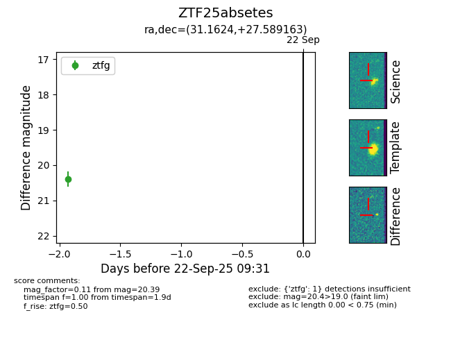

FINK: ZTF25absetes
Lasair: ZTF25absetes
ALeRCE: ZTF25absetes
ZTF25absetes (ztf,fink)
equatorial (ra, dec) = (31.1624,+27.58916)
galactic (l, b) = (142.2077,-32.52750)

last ztfg=20.39, ztfr=20.29
1 ztfg, 1 ztfr detections